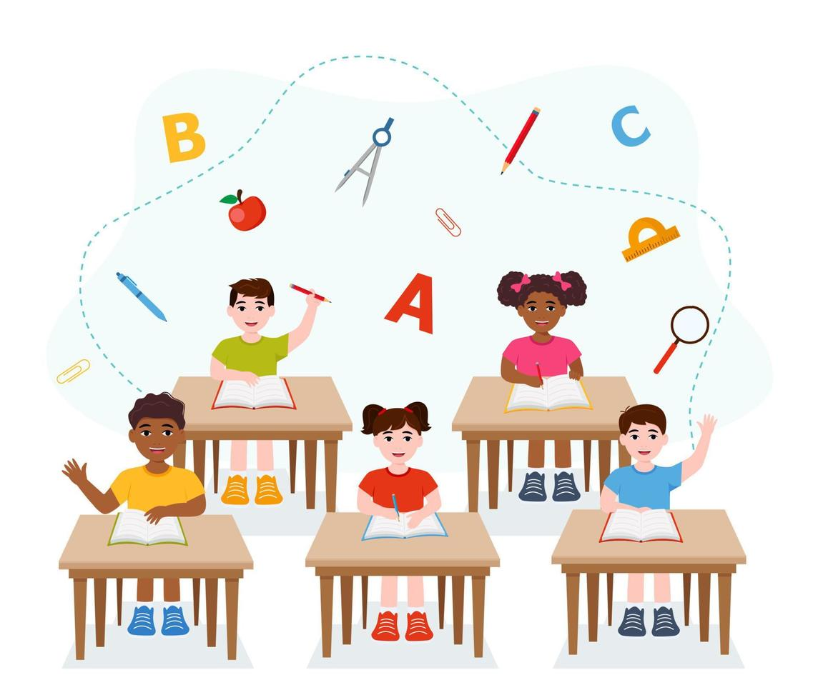

Oferta Académica
Contamos con una propuesta educativa estructurada por niveles, diseñada para acompañar el desarrollo integral del estudiante en cada etapa de su vida.

Preescolar
Desarrollo sensorial, motor y socioafectivo en un ambiente lúdico y seguro para los primeros años.

Primaria
Fundamentos sólidos en lectura, matemáticas, ciencias y formación ciudadana con enfoque crítico.
Secundaria
Profundización académica, orientación vocacional y desarrollo de competencias para la vida universitaria.